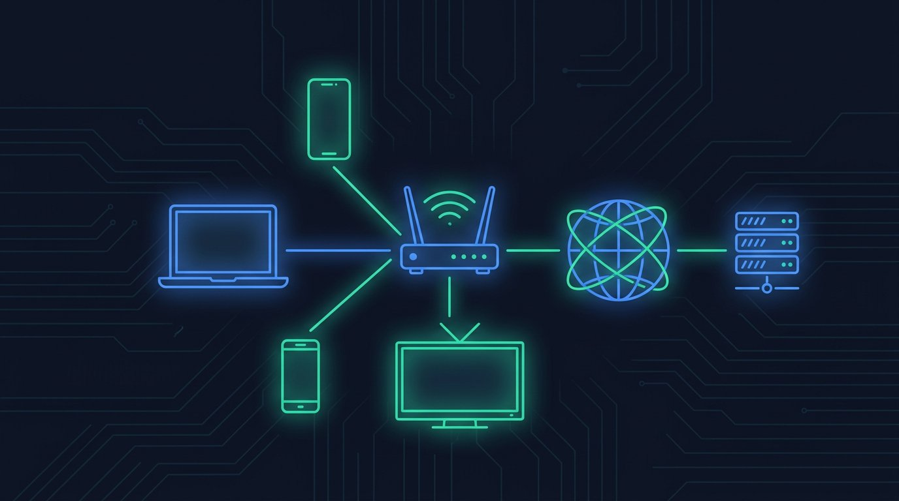

Redes e internet: como tudo se conecta
Do Wi-Fi da sua casa até o outro lado do mundo — entenda o caminho que seus dados percorrem.

🎯 Objetivos de aprendizagem
- Explicar o que é uma rede e seus componentes: roteador, modem, cabo e Wi-Fi.
- Entender endereço IP e como os dispositivos se encontram na rede.
- Descrever o que acontece quando você digita um site no navegador.
- Diferenciar velocidade de download/upload, megabit e megabyte.
- Entender o que realmente é "a nuvem".
9.1 O que é uma rede?
Rede é um conjunto de dispositivos conectados que trocam dados entre si. A menor rede é o seu celular conectado ao fone Bluetooth; a maior é a internet: uma "rede de redes" que liga bilhões de dispositivos no planeta.
| Tipo | Alcance | Exemplo |
|---|---|---|
| PAN (pessoal) | ~10 metros | Bluetooth: celular + fone + relógio |
| LAN (local) | Casa, andar, prédio | Sua rede doméstica: roteador, celulares, TV, PC |
| WAN (ampla) | Cidades, países, mundo | A internet |
9.2 Os equipamentos da sua casa
- Modem / ONT — recebe o sinal da operadora (fibra, cabo) e converte em dados. Muitas vezes vem junto no mesmo aparelho do roteador.
- Roteador — o "carteiro" da sua rede local: distribui a internet para seus dispositivos (por cabo ou Wi-Fi), cria a rede doméstica e decide para onde vai cada pacote de dados.
- Cabo de rede (ethernet, RJ-45) — conexão com fio: mais estável, mais rápida e sem interferência. Ideal para TV, console e home office.
- Wi-Fi — a rede sem fio do roteador. Bandas: 2,4 GHz (alcance maior, mais lenta, sofre interferência) e 5 GHz (mais rápida, alcance menor). Wi-Fi 6 é o padrão atual mais eficiente.
- Repetidor/mesh — estendem o sinal para cantos da casa onde o Wi-Fi não chega.
9.3 Endereço IP: o "número da casa" de cada dispositivo
Todo dispositivo em uma rede tem um endereço IP, um número que o identifica. Exemplo: 192.168.0.15.
- IP local (privado) — dentro da sua casa: o roteador distribui (via DHCP) endereços como
192.168.x.xpara celular, TV, PC. - IP público — o endereço da sua casa para o mundo, dado pela operadora. Todos os seus dispositivos "saem" para a internet através dele (NAT).
- Os sites também têm IP — o servidor do google.com, por exemplo, responde em um IP específico. Como decorar números é impossível, usamos nomes, traduzidos pelo DNS (a "lista telefônica da internet").
9.4 O que acontece quando você abre um site?
- Você digita
www.loja.com.brno navegador e aperta Enter. - Seu dispositivo pergunta ao DNS: "qual é o IP de loja.com.br?" → recebe algo como
203.0.113.42. - Seu pedido viaja: celular → roteador → modem → operadora → cabos/antenas → servidor da loja.
- O servidor devolve os arquivos (HTML, imagens...) em pacotes pequenos, que viajam por caminhos diferentes e são remontados no seu aparelho.
- O navegador desenha a página na tela. Tudo isso em frações de segundo.
Quando o endereço começa com https:// (e aparece um cadeado 🔒), os dados entre você e o site viajam criptografados. Sem isso, senhas poderiam ser interceptadas. Sempre confira antes de digitar dados pessoais.
9.5 Velocidade: megabit ≠ megabyte
- Planos de internet são vendidos em Mbps (megabits por segundo): 100 Mbps, 500 Mbps, 1 Gbps.
- Arquivos são medidos em MB (megabytes). 1 byte = 8 bits, então 100 Mbps ≈ 12,5 MB/s de download real (na teoria).
- Download = receber dados; Upload = enviar. Videochamadas e backups dependem de upload.
- Ping/latência = tempo de ida e volta até o servidor, em ms. Importa mais que a velocidade para jogos e chamadas ao vivo.
- Internet "lenta" nem sempre é culpa da operadora: pode ser Wi-Fi distante, aparelho velho ou muitas pessoas usando ao mesmo tempo.
9.6 A nuvem (de novo, agora sem mistério)
Você já viu a nuvem no Módulo 4 (armazenamento). Agora sabe o que ela é de verdade: servidores em data centers, acessados pela internet, rodando majoritariamente Linux (Módulo 7). E-mail, streaming, apps de banco, jogos online — tudo depende de servidores remotos. "Estar na nuvem" = "estar no computador de alguém, longe daqui".
Rede = dispositivos conectados; roteador distribui e direciona; IP identifica cada um; DNS traduz nomes em IPs. Abrir um site = DNS → pacotes → servidor → navegador. Mbps ÷ 8 = MB/s. Cabo é mais estável que Wi-Fi; HTTPS protege seus dados no caminho.
🛠️ Atividade prática
- Descubra seu IP local e o do seu roteador: no Windows, abra o Prompt de Comando e digite
ipconfig(no Mac/celular: configurações de rede). Anote os endereços 192.168.x.x. - Teste sua velocidade em fast.com ou speedtest.net. Converta o resultado de Mbps para MB/s (divida por 8) e compare com o plano contratado.
- Fique a 1 metro do roteador e teste a velocidade; depois vá ao canto mais distante da casa e teste de novo. Compare — você acabou de medir na prática a diferença do Wi-Fi.
- Abra um site qualquer e olhe a barra de endereço: tem https:// e cadeado? Entre na página de configurações do site e veja o certificado.
📝 Quiz do Módulo 9
Responda as 5 questões. Acerte 70% (4 de 5) ou mais para concluir!